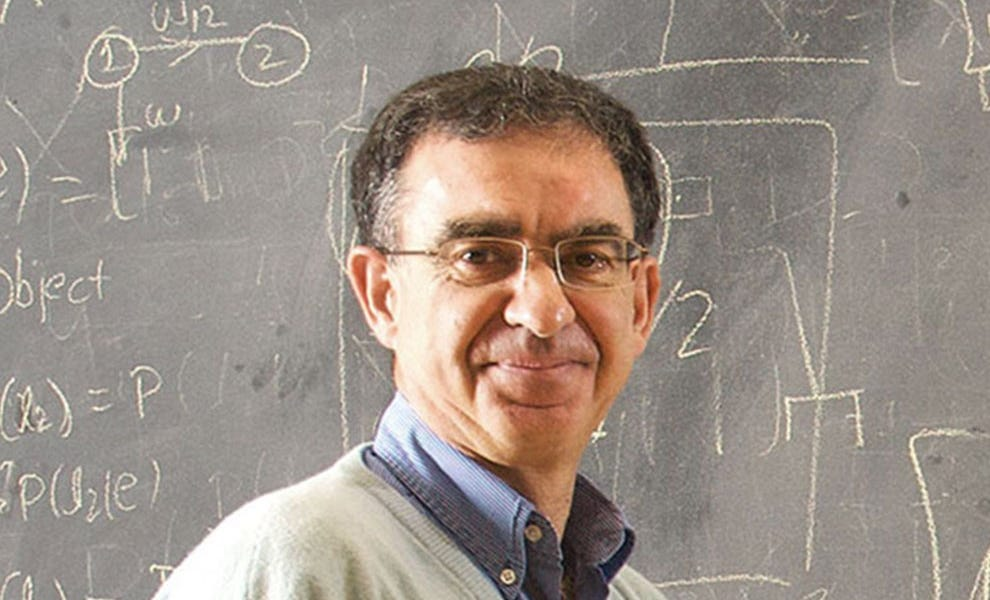
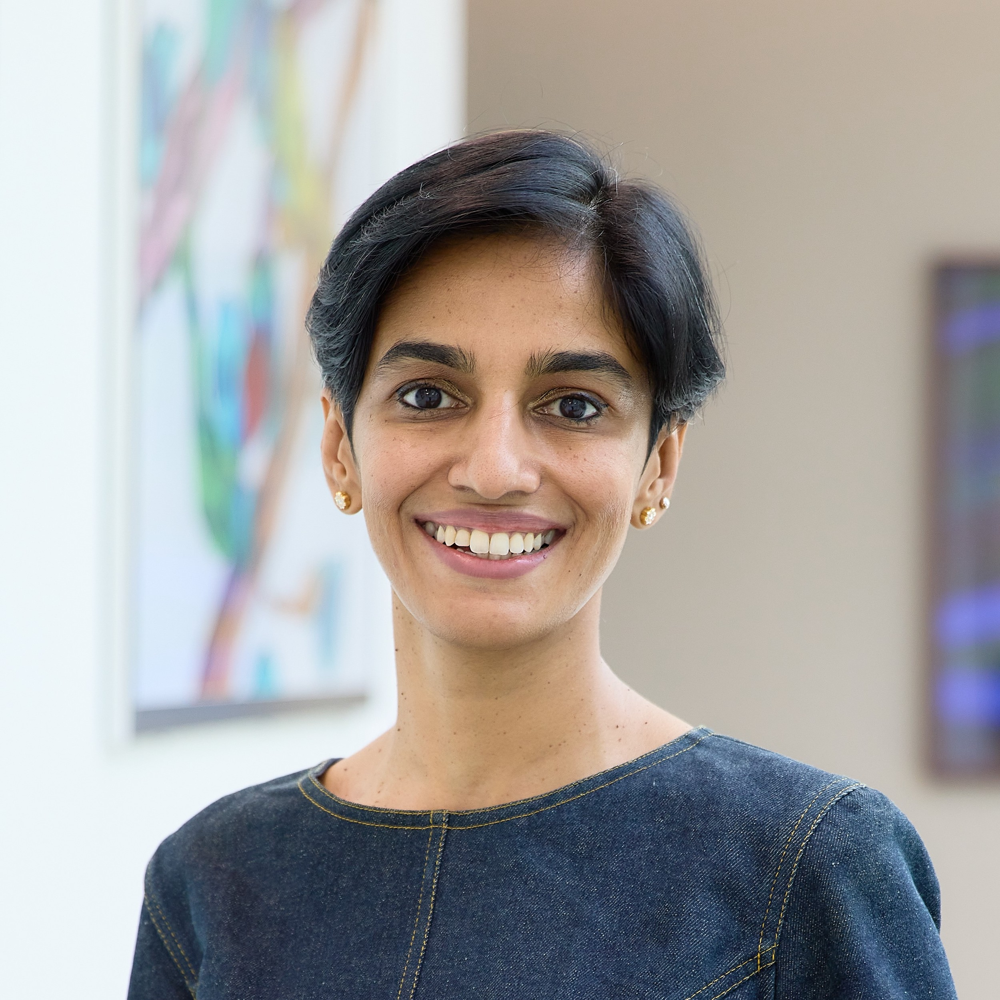

Surya Ganguli
Stanford University

ICLR 2027 Workshop 29/30 April, 2027
Exploring how physical principles can shape learning objectives, illuminate optimization dynamics, and reveal the structure of AI representations.
Modern AI systems are increasingly powerful, yet their objectives, representations, training dynamics, and emergent behaviors remain only partially understood. The Physical Pathways to Understanding AI Mechanism workshop explores how physical principles can provide mathematical and algorithmic tools for understanding and designing modern machine learning systems.
The workshop treats AI systems as high-dimensional statistical and dynamical systems. From this perspective, learning objectives define effective energy landscapes, optimization and sampling induce nonequilibrium dynamics, and latent spaces become structured state spaces shaped by geometry, symmetry, and constraints. This viewpoint connects a broad range of topics, including free-energy principles, diffusion and flow models, energy-based learning, representation geometry, phase transitions, training dynamics, and foundation-model theory.
Unlike broad AI-for-science workshops that focus primarily on applying AI to scientific discovery, this workshop studies AI systems themselves as objects of physical analysis. We aim to bring together researchers from machine learning, statistical physics, applied mathematics, computational neuroscience, and related fields to build a shared language for Physics for AI, clarify open problems, and identify principles for interpretable, controllable, and robust AI systems.
The detailed workshop schedule will be added after the ICLR 2027 workshop date, room assignment, speakers, and accepted papers are confirmed.
We welcome submissions on topics related to Physical Pathways to Understanding AI Mechanism, including but not limited to:
Invited speakers will be announced after invitations are confirmed. Names, affiliations, talk titles, and abstracts can be added here.
Stanford University
Yale University

Harvard University

MIT

Harvard University

Recursive_SI

Bocconi University
Add names, affiliations, websites, and roles here once the organizing committee is finalized.
Fudan University

The Chinese University of Hong Kong

The Chinese University of Hong Kong
Tufts University
Tsinghua University
For any questions about submissions, sponsorship, invited sessions, or the workshop program, contact the organizing team.